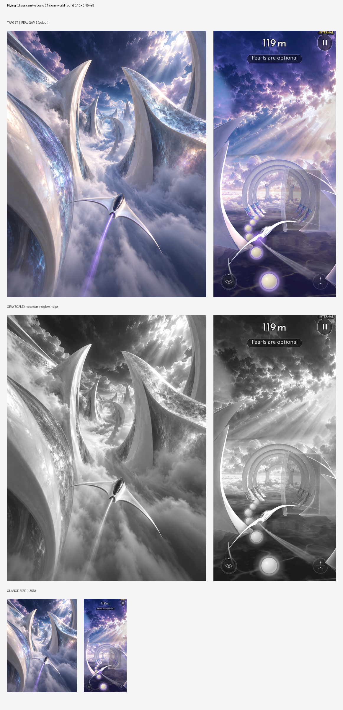
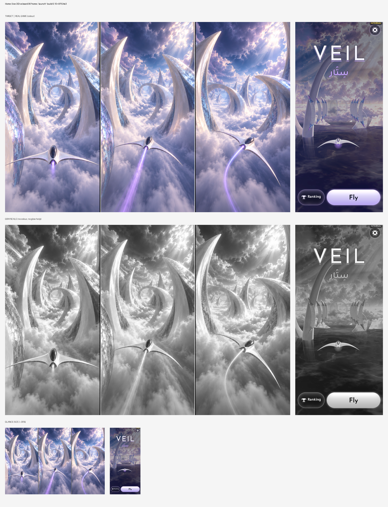

build.json · automated checks for build 0.10+0f154e3
Automated: each capture from this build beside its visual-bible target (sheets below), with measured differences. The numbers flag drift; they don't judge quality. Look at the sheets.
| # | Screen | Lightness (build / target) | Contrast | Colourfulness | Dark share | Highlights | Drift flags | Sheet |
|---|---|---|---|---|---|---|---|---|
| 1 | Flying (chase cam) vs board 01 'storm world' | 49.6 / 54.2 | 24.3 / 20.0 | 23.7 / 15.1 | 0.14 / 0.04 | 0.12 / 0.13 | – | art_01.png |
| 2 | Home (live 3D) vs board 06 'home / launch' | 39.0 / 62.0 | 21.5 / 17.6 | 16.9 / 19.2 | 0.23 / 0.0 | 0.04 / 0.18 | darker, missing highlights/glow | art_02.png |
| Screen | Build | Target |
|---|---|---|
| Flying (chase cam) vs board 01 'storm world' | #252955 #8e8bb3 #bbafc8 #46487b #6b6492 #e4dae2 | #8c8ca7 #616683 #3e4461 #72718c #b8b3c7 #e3dae0 |
| Home (live 3D) vs board 06 'home / launch' | #21203f #6e6981 #8c8597 #373855 #4c4865 #c3bbcf | #8381a5 #565c85 #9798bd #c9c0d8 #b1a6c5 #eadfe8 |
Target: every role pair ≥ 25.0.
| Roles | Closest pair ΔE | Result |
|---|---|---|
| enemy vs background | 82 | ✅ |
| player_bullets vs background | 77 | ✅ |

